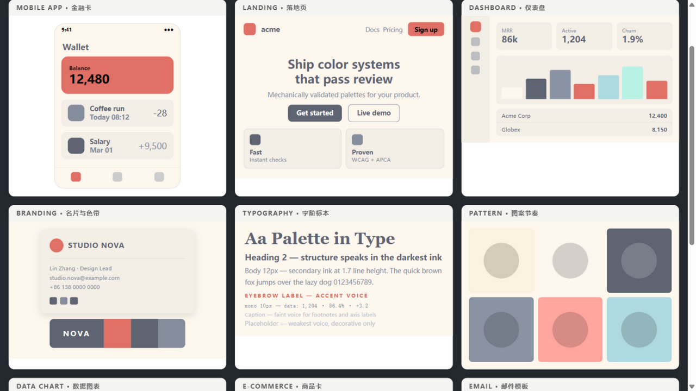
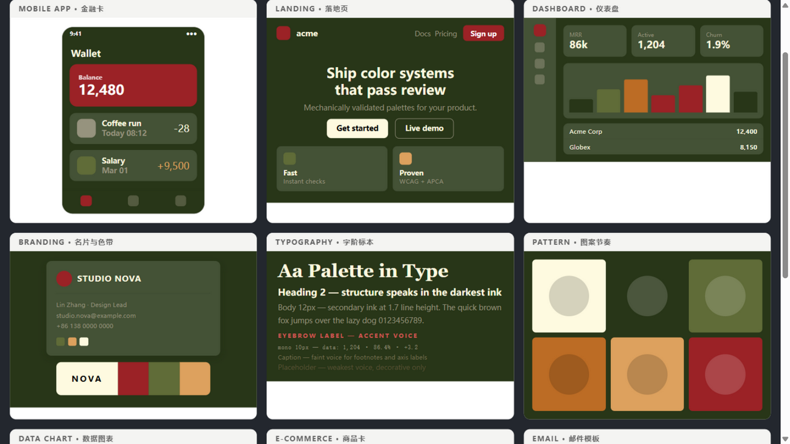

大模型输出的配色经常不可用:hex 被当作文本、输出回归训练中位数、而且模型看不见自己渲染的结果。aesthete-agent 把品味外包给流程——检索先于生成,派生先于偏好,验证先于交付。这份文档本身就是一个实例:每一页用一块不同的色板渲染,由同一套角色派生公式驱动,全部通过四道机械闸。
交互样张见 Visual Showcase · 安装方式见 07 安装。
大模型输出的配色经常不可用,原因有三个,而且都与模型规模无关。
模型在 token 空间里「背诵」颜色,而不是在感知空间里比较它们——两个 hex 放在一起是否协调,它没有把握。
公开前端教程里出现频率最高的倾向是紫与蓝。没有外部约束时,模型会稳定地漂回这个中位数,产出千篇一律的「AI 味」。
它无法渲染一张图再检查文字是否可读、色盲用户是否分辨得出。而这三件事,恰恰是配色工程里必须验证的部分。
换更聪明的模型解决不了这三个问题——它们是流程问题,不是智力问题。
从一句话需求到一份通过验收的配色,引擎按固定顺序执行六步。其中任何一步失败,流程会停下来并给出修复建议,而不是继续输出。
角色派生在 OKLCH 空间完成:大底抬亮与降饱和有固定公式,文字与底色的对比度在派生时就已确定,而不是渲染后碰运气。
第六步是引擎与「一次性输出」的区别:每次验收或否决都回写色板库与偏好档案,下一次匹配随真实口味移动。
每一份输出都要过四道闸。闸门只认数字,不认修辞——下面卡片里的每个数字,都来自引擎对本页所用色板的实测。
WCAG 2.2 边界值逐对检验(#767676 通过、#777777 不通过,这种级别的边界都在测试集里),可选 APCA 感知算法。失败时输出修复建议:沿 OKLCH 抬升亮度直到达标。
红色弱/绿色弱/蓝色弱三种模拟逐一检查色间分离度,分类色板要求去盲分离度 ≥ 0.08。分离度下降会如实标出,并给出替代方案。
检测四类高发签名:训练中位数色族、紫渐变倾向、平坦明度、全高饱和。命中即非零退出。另有一条工程铁律:任何渐变一律不合格,纯色分层替代。
明度弧、饱和分布、角色配比、语义一致性、可访问性,五维合计 20 分,低于 10 分非零退出。
四闸聚合为一条 report 命令:一次调用输出单份 PASS/FAIL JSON,退出码即裁决,可直接接入 CI。
模拟是诚实的:即便整体通过,个别色对的分离度变化也会行级标出。
色板不适合用色卡评审。引擎把配色渲染进十个真实场景——移动应用、落地页、仪表盘、品牌、字阶、图表、商品卡、邮件、编辑页、图案——大画布、设备框、真实内容密度。
本章页面特意选用明亮暗色主题演示:暗色大底由角色派生公式自动抬亮(Olive Garden 大底 +11 L、降饱和 28%),暗色不等于黑压压。截图为浅色与暗色两套主题的十场景画布。


完整交互版(二十块收藏色板 × 全部场景,含 SVG 重着色演示)在 Visual Showcase。
色板库有两个来源:社区长期沉淀的高人气板(收割时逐块过客观闸),以及使用者验收后的裁决入库——每一次「这个配色通过」的决定都会让库向使用者的真实口味靠近一步。
匹配按语域而非关键词:医疗教学页与电商大促页得到不同的候选序列,且候选都先过同一套客观闸。偏好档案(深色惩罚、禁用色族、已验证板)随裁决持续更新,机械地作用于每一次匹配。
两个真实使用场景,一个关于「一致性」,一个关于「兜底」。
一套医学科普视频系列,二十余期封面共用同一块五色板作为系列身份。色板锁定后,每期只更换构图与标题元素——观众不看节目名也能凭颜色认出系列。闸门在这条管线里的职责是防止「某一张忽然跑色」:每期封面交付前过一次对比度与签名检查。
长篇教学页面正文量大、层级深,最常见的问题不是「不好看」,而是「某一段忽然读不清」。交付前的 HTML 审计逐点检查文字对底色的对比度,渐变与高饱和签名直接判不合格——对以可读性为生命的医学内容,这道闸是兜底而不是装饰。
Skill 形态面向编码代理的技能目录;SkillHub 面向国内环境;MCP 形态面向任何支持 Model Context Protocol 的客户端;两者共用同一引擎。
npx skills add docsor1212/aesthete-agentskillhub install aesthete-agent --dir ~/.claude/skillsuvx aesthete-agent-mcpsmithery.ai/server/docsor1212/aesthete-agent-mcp引擎为纯 Python 标准库实现,安装后完全离线;不需要 API key,不上传任何数据。色板库与偏好档案以 JSON 随包分发,可离线审计。